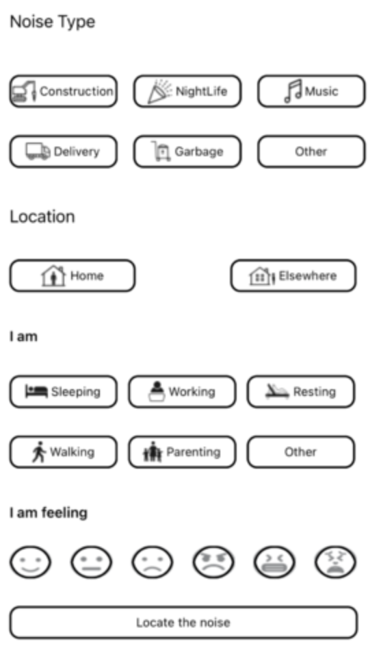
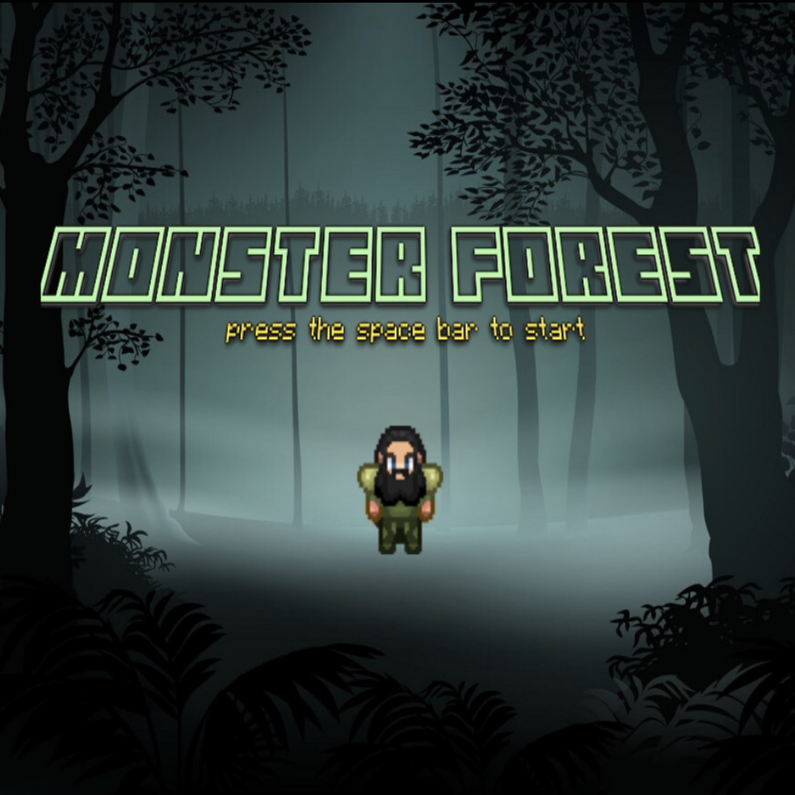
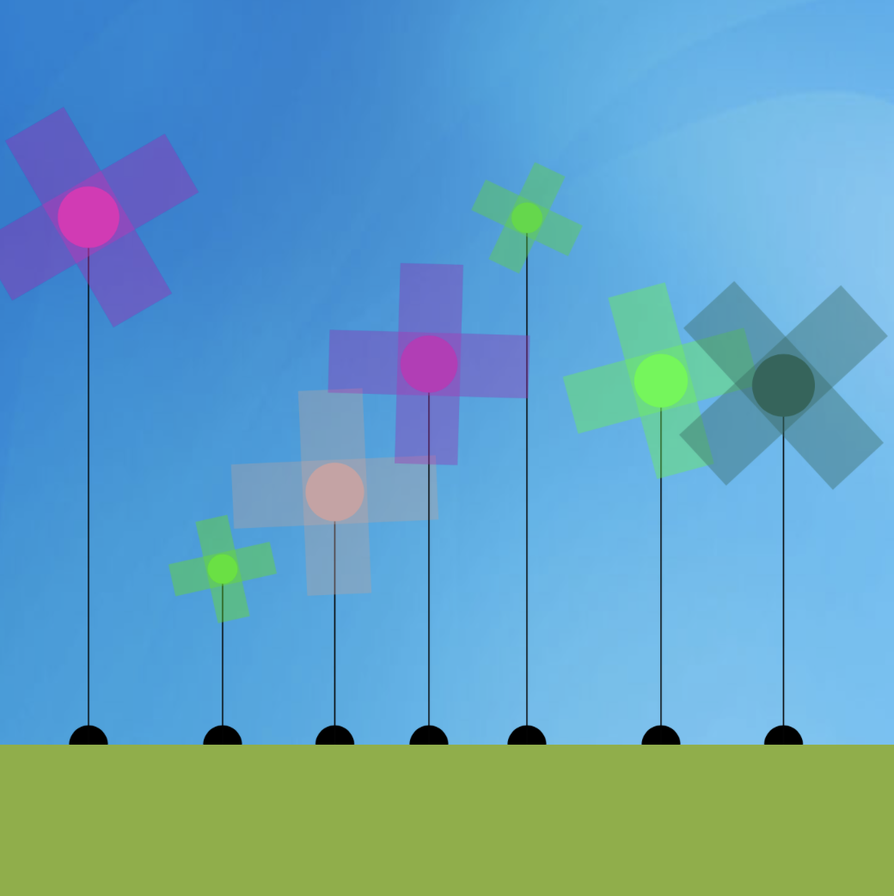
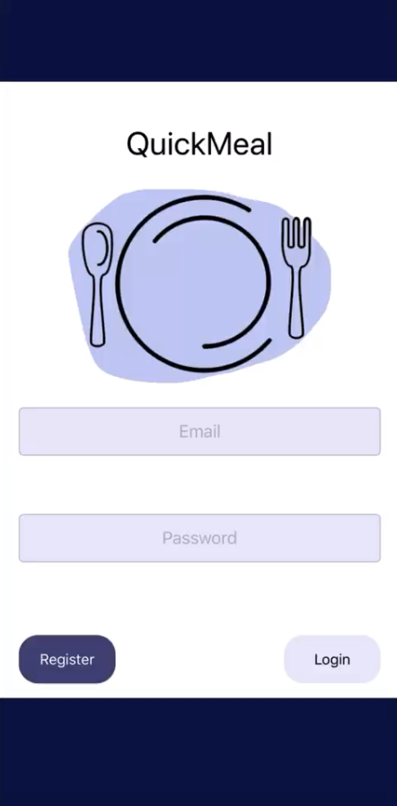

SONYC

Are you tired of all of the noise you hear in the day when you are trying to work or in the night when you are trying to sleep? This project consisted of an application written in swift in order to mitigate the noise pollution in urban communities. In order to measure the sound level around a user, there is a decibel meter that uses audio signal processing that shows the amount of decibels in the user's area.

Wouldn't you want to play a game that is one of a kind? This project was a tile based game where the main character has to go into different rooms to collect the coins in order to win the game when crossing the finish line. Along the player's way to retrieve the coins, they face the challenge of the randomly generated monsters that appear and will cause a decrease in health if the player comes into contact with them. The player can make noise into their microphone in order to ward off the monsters to get to the coins and the end of the game savely. There are also hearts in every room to help with the player's health level.
Course Registration System

Did you ever think about how your school makes the system in which you register for classes? This project recreates a course registration system similar to my university's system for students to register for classes and for an admin to place a student in a class for a specific reason.

Have you ever wanted to create your own magical garden? This project grows a garden of flowers by planting seeds every time the user clicks the mouse. Each flower grows to a height of a random measurement and sprouts a petal of a random color that turns as if it is blowing in the wind.

This project was entered in an entrepenurial compeition at my university where my team made it to the finals. It is an application to help college students suffering from food insecurity.